유아발레
놀이처럼 시작해 몸의 감각과 수업 태도를 자연스럽게 익힙니다.
LOVE YOUR BODY. BE BALLET.
내 몸을 이해하고,
움직임을 발견하며,
가장 아름다운 나의 표현을 만나는 공간.
About
비발레는 발레를 단순한 기술 교육으로 생각하지 않습니다.
우리가 중요하게 생각하는 것은 얼마나 빨리 잘하게 되는지보다 어떤 감각과 태도로 움직이는가입니다. 몸의 감각을 인지하고, 올바른 정렬을 이해하며, 움직임을 통해 자신만의 표현을 만들어가는 과정.
비발레는 이 과정을 통해 발레가 단순한 취미를 넘어 몸을 이해하고 삶의 균형을 찾아가는 경험이 될 수 있다고 믿습니다. 유아부터 성인까지, 취미부터 전공 과정까지. 각자의 목적은 다르지만 좋은 교육의 본질은 같다고 생각합니다.
기초를 소중히 여기는 태도. 오래 지속될 수 있는 성장. 그리고 자신의 몸을 더 아끼는 마음. 그것이 비발레가 지향하는 발레입니다.
비발레의 교육 과정
내 몸의 움직임과 감각을 이해합니다.
올바른 자세와 정렬을 익힙니다.
움직임을 통해 자신만의 표현을 만들어갑니다.
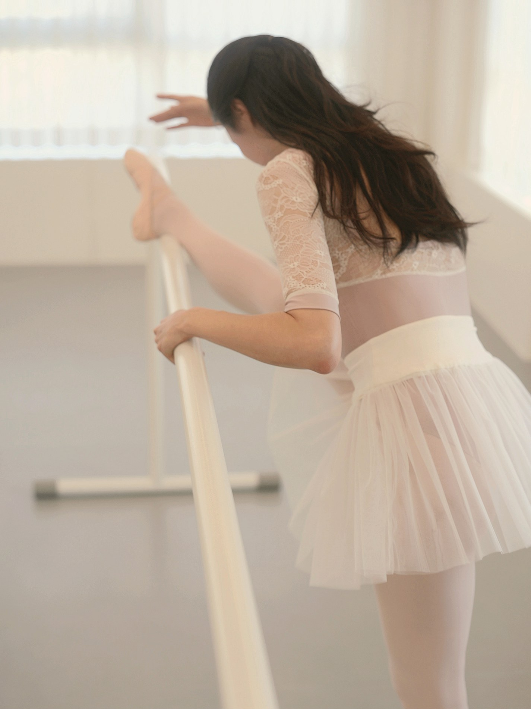
발레를 배우는 것을 넘어, 내 몸을 이해하고 표현하는 법을 배우는 곳.
내 몸을 사랑하고, 가장 아름다운 나의 움직임을 마주하는 시간.Programs
놀이처럼 시작해 몸의 감각과 수업 태도를 자연스럽게 익힙니다.
성장기 몸에 맞춰 정렬, 중심, 집중력을 함께 기르는 수업.
기본기, 작품, 무대 감각을 함께 다루는 집중 과정.
나를 위한 움직임을 다시 배우는 시간.
발끝의 정렬과 힘을 섬세하게 익히는 수업.
음악과 안무를 통해 표현력을 완성하는 수업.
몸의 상태와 목표에 맞춘 1:1 맞춤 수업.
함께 배우며 세심한 지도를 받는 맞춤 수업.
유아·초등 성장기 수업과 성인 클래스, 전공 지도를 함께 운영합니다.
Songpa입문부터 레벨·토슈즈·개인레슨까지 같은 기준으로 세심하게 이어갑니다.
Adult Ballet Level
수업에서 익힌 움직임은 성인 공연과 아이들의 무대 경험으로 자연스럽게 이어집니다.
Director & Faculty
Director
비발레는 잘하는 순간보다 오래 지속할 수 있는 발레를 고민하며 시작되었습니다. 성남점과 송파점 두 지점을 운영하며 유아부터 성인, 취미부터 전공 과정까지 다양한 수강생을 만나왔습니다. 발레 교육 현장에서 쌓아온 10년 이상의 경험과 공연 제작, 예술경영의 관점을 바탕으로 비발레의 수업과 무대를 함께 만들어가고 있습니다.
저는 발레가 단순히 동작을 배우는 일이 아니라, 몸을 이해하고 스스로를 표현하는 과정이라고 생각합니다. 그래서 비발레는 결과보다 과정, 기술보다 감각, 속도보다 방향을 중요하게 생각합니다. 비발레가 누군가에게는 새로운 도전이 되고, 누군가에게는 일상 속 쉼이 되며, 또 다른 누군가에게는 꿈을 향한 출발점이 되기를 바랍니다.
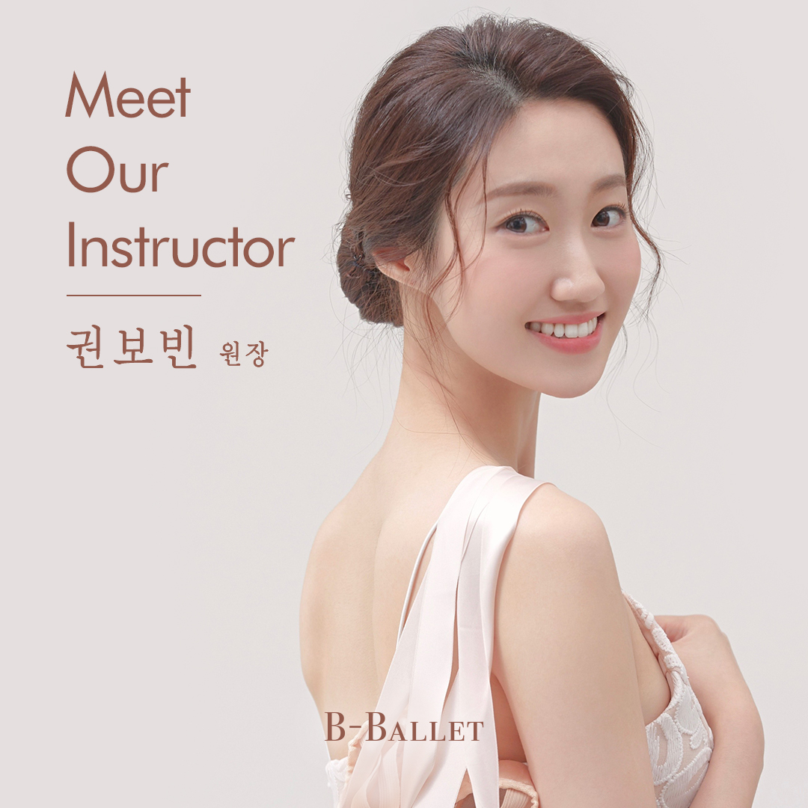
Gallery

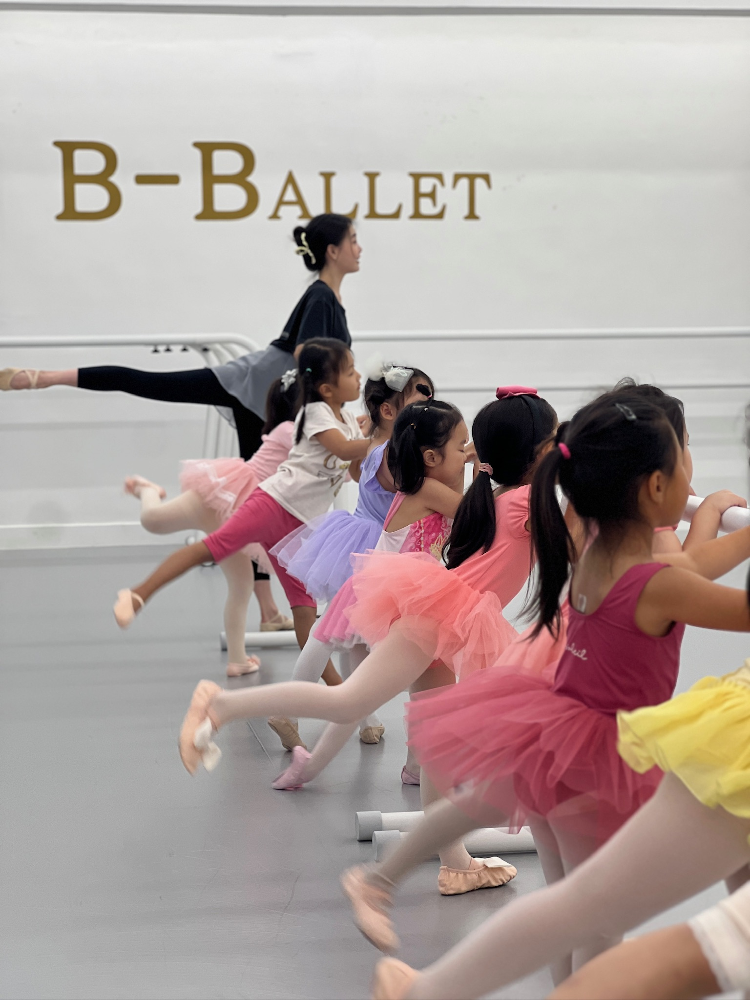
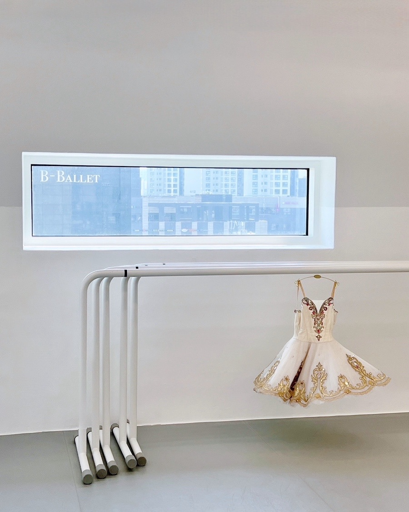
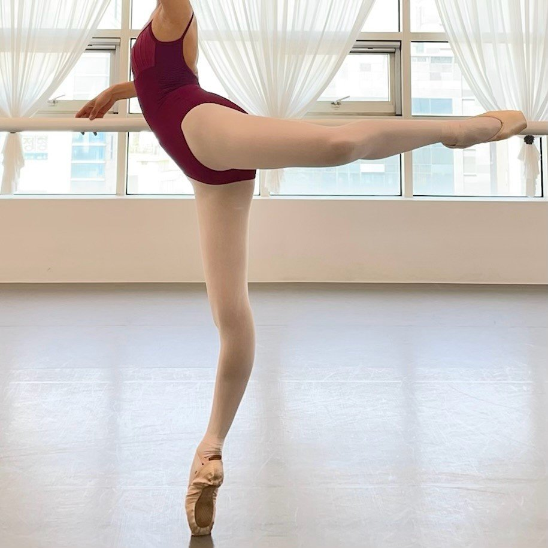


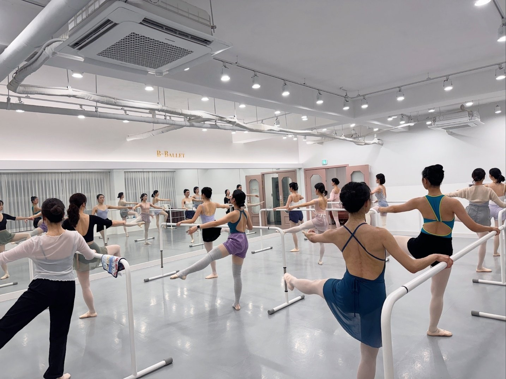
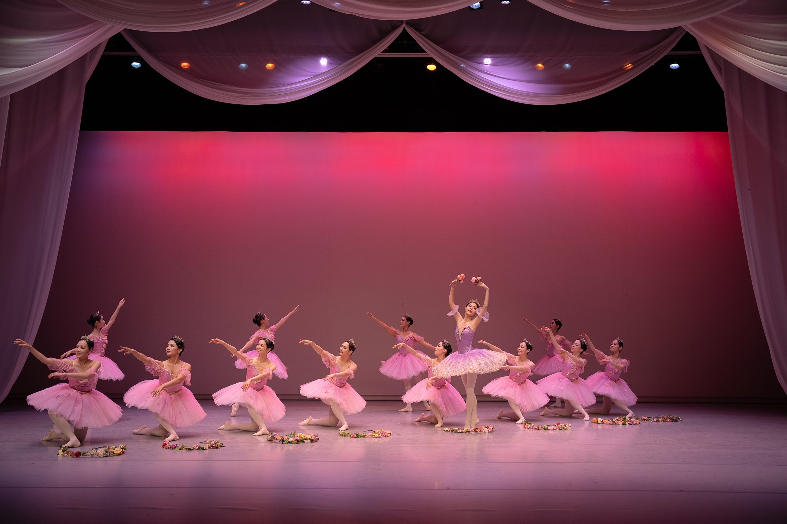
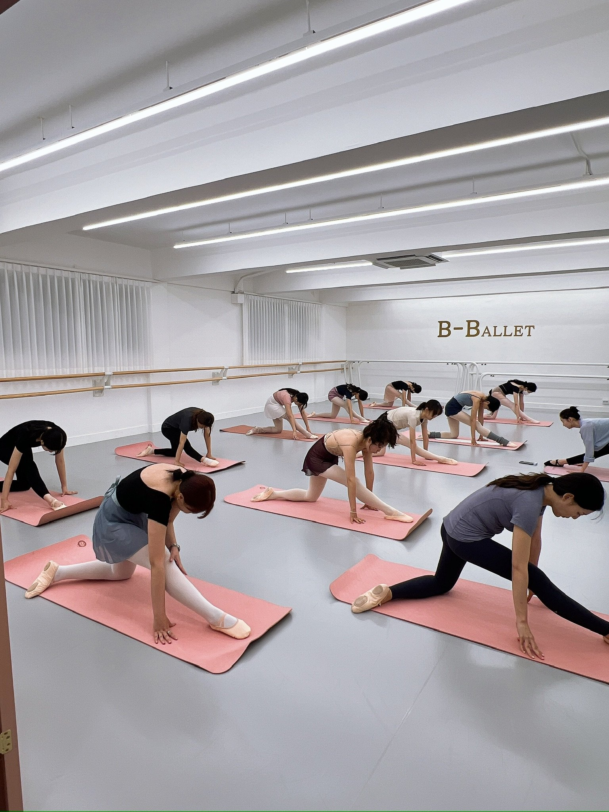

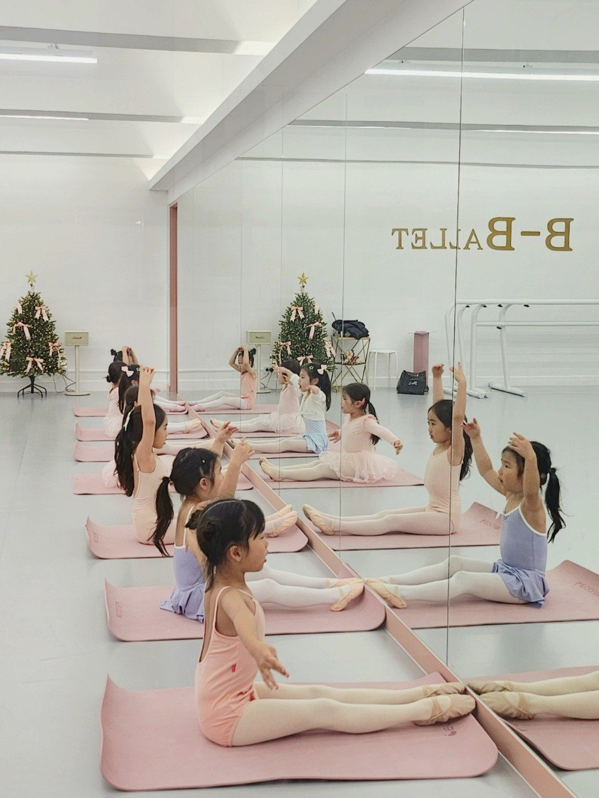
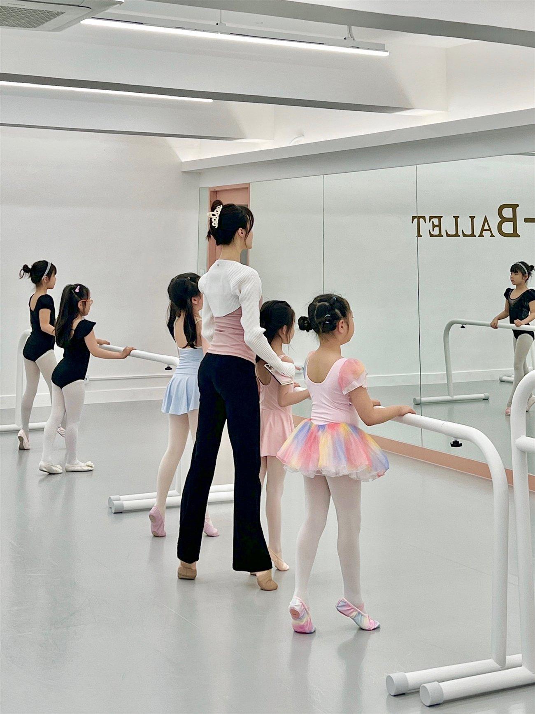
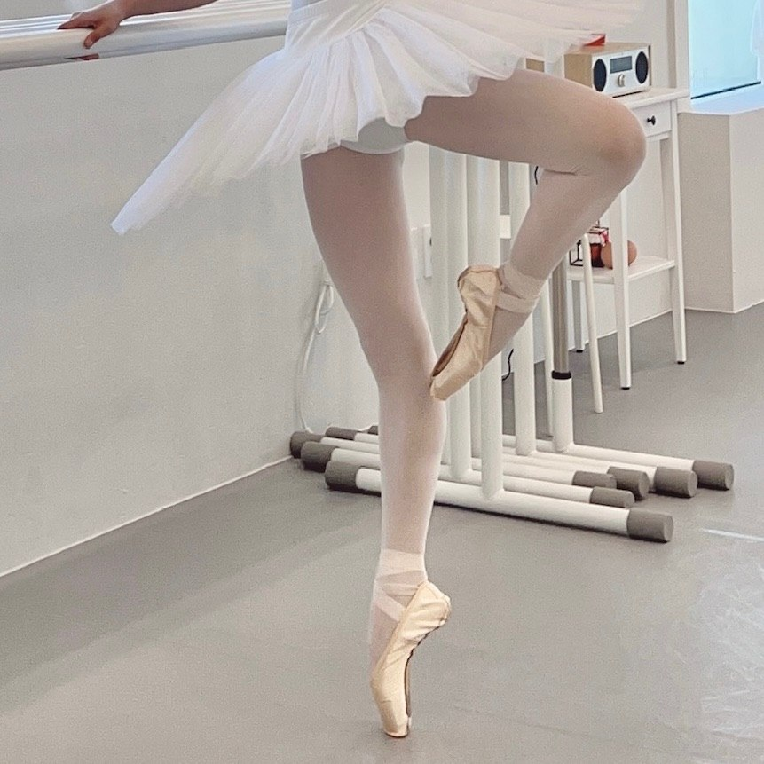
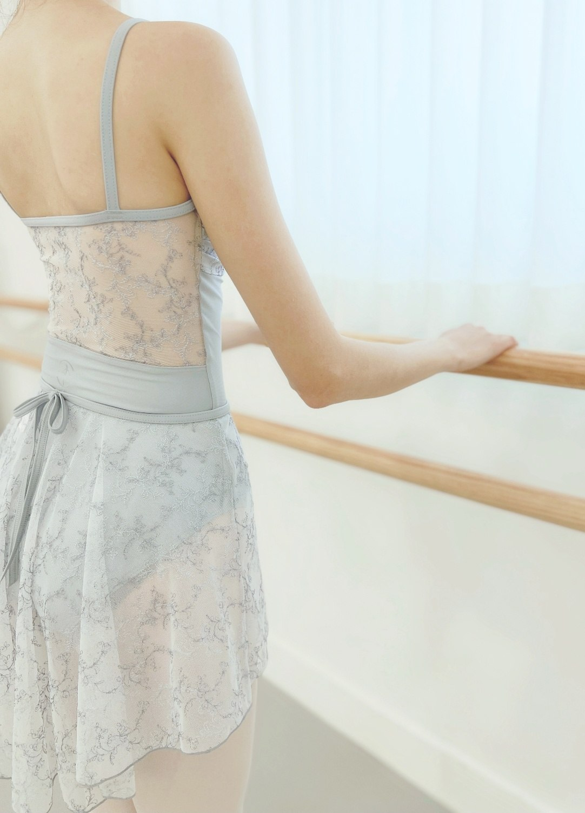
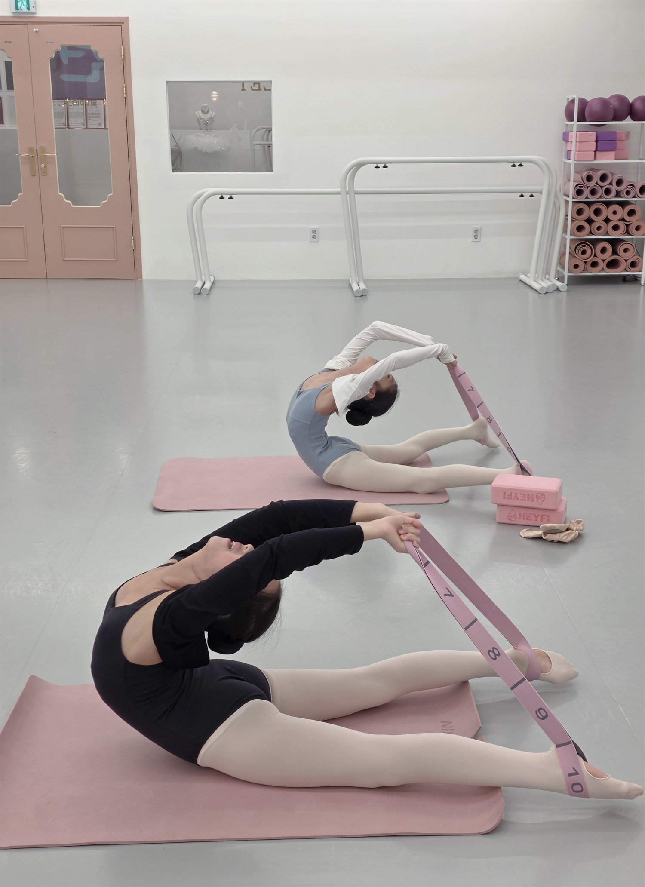
Contact
체험수업 신청 후 희망 지점과 수업을 확인하고, 이메일 또는 카카오 상담으로 접수와 등록 안내가 이어집니다.
체험수업 상담 신청Seongnam Studio
성장기 수업부터 전공 과정까지 비발레의 기준으로 안내합니다.
성남점 문자 상담Songpa Studio
입문부터 레벨·토슈즈·개인레슨까지 지점 상황에 맞춰 안내합니다.
송파점 문자 상담FAQ
네. 발레 경험이 없어도 괜찮습니다. 체형과 유연성은 시작 조건이 아니며, 현재의 몸에 맞춰 시작합니다.
입문과 기초반부터 차근차근 안내하며, 개인의 속도에 맞춰 레벨을 이어갑니다.
가까운 지점을 우선 선택해도 좋고, 원하는 시간과 수업 레벨에 맞춰 상담으로 안내받을 수 있습니다.
가능합니다. 목표, 몸의 상태, 가능한 시간에 맞춰 개인레슨과 소그룹 레슨을 상담할 수 있습니다.
성인 공연과 아이들의 무대 경험을 준비하며, 수업에서 배운 움직임이 무대까지 이어지도록 돕습니다.